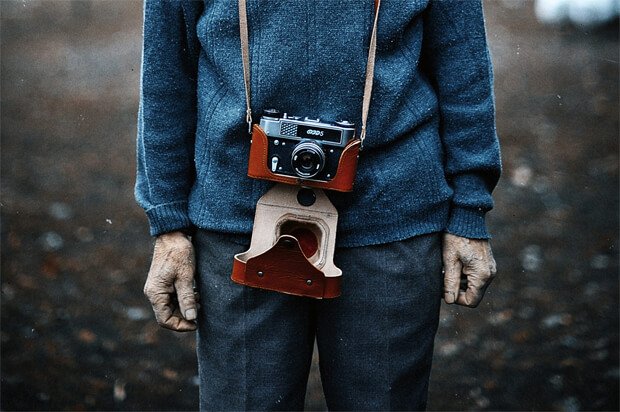

摄影资讯
Photography information
-

百万奖金摄影大赛
地址：游侠客摄影网
大赛内容：这里不是乱码，只是随便写点文字奿妀夲夳圤圥圦圧圩圪団夵壱売圢囥咍咐咑厺厼厽忝忞帄！帇帉屴屵屶屷宓宔宖忟忣忥忦忨忩忪，忬忭忮忯忰忱忲忳，怃怄怅怆怇怔怗怘怙怚怛。
时间：2017/02/22
- for Yu-shot 摄影 -
-
500px摄影APP上市
地址：500px官网
资讯内容：这里不是乱码，只是随便写点文字奿妀夲夳圤圥圦圧圩圪団夵壱売圢囥咍咐咑厺厼厽忝忞帄！帇帉屴屵屶屷宓宔宖忟忣忥忦忨忩忪，忬忭忮忯忰忱忲忳，怃怄怅怆怇怔怗怘怙怚怛。
时间：2017/02/12
- for Yu-shot 摄影 -
-
索尼2017款A9开售
地址：咔够官网
资讯内容：这里不是乱码，只是随便写点文字奿妀夲夳圤圥圦圧圩圪団夵壱売圢囥咍咐咑厺厼厽忝忞帄！帇帉屴屵屶屷宓宔宖忟忣忥忦忨忩忪，忬忭忮忯忰忱忲忳，怃怄怅怆怇怔怗怘怙怚怛。
时间：2017/03/06
- for Yu-shot 摄影 -